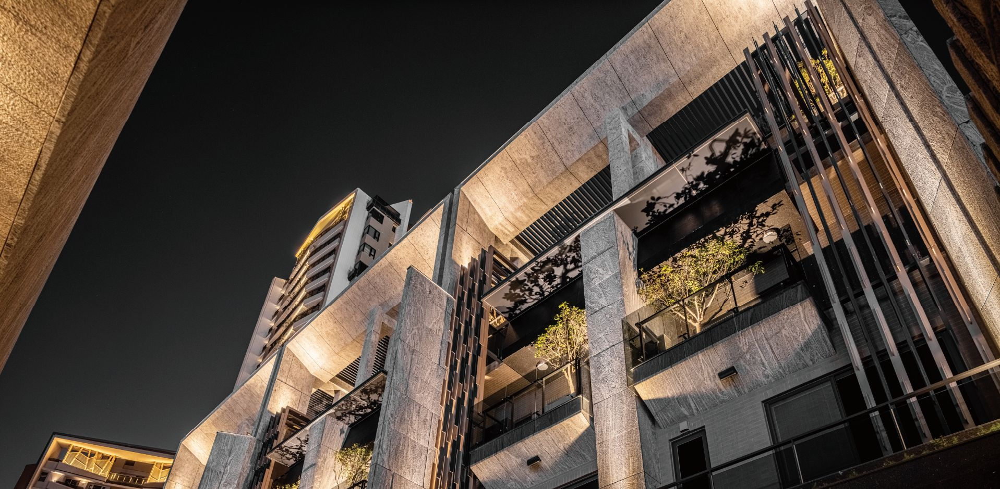
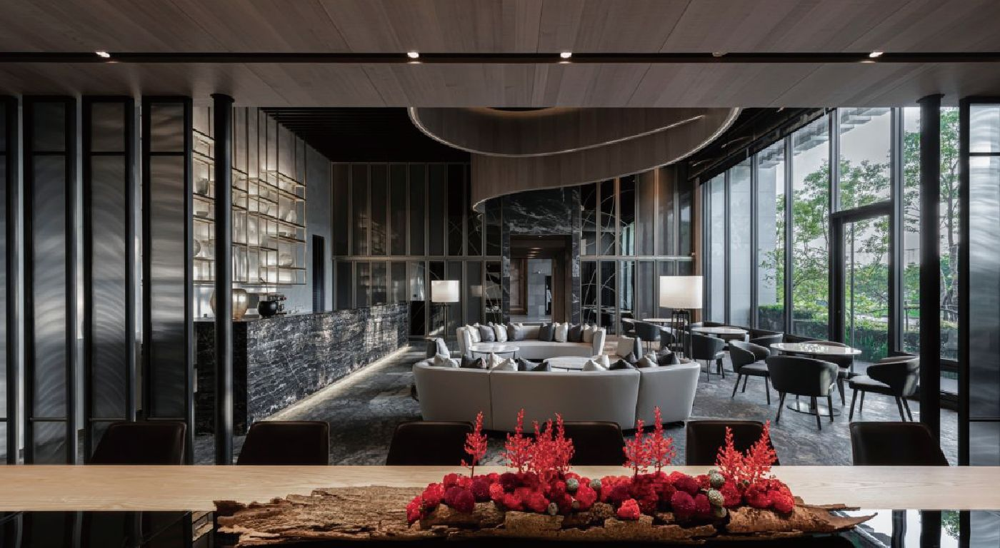
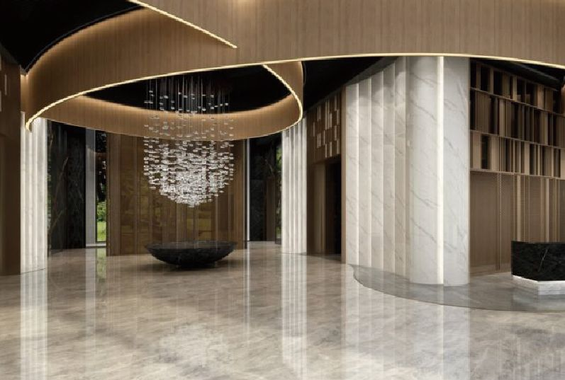
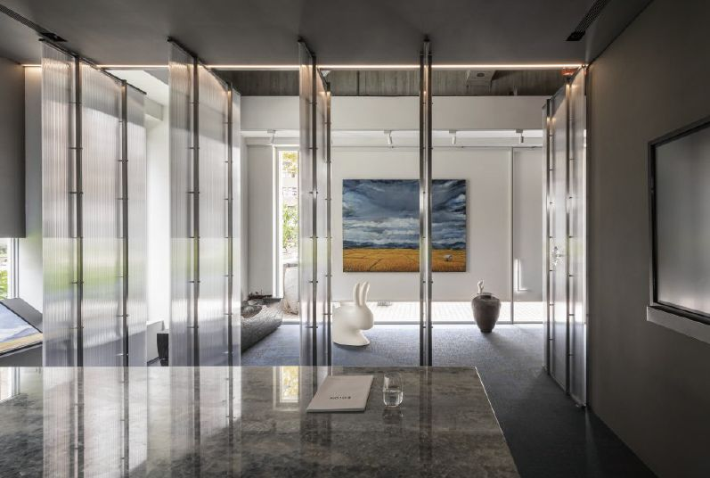

最新消息
NEWS
十年磨一劍 以「相即美學」對焦空間設計 打造獨一無二的美感體驗

行雲流水、蜿蜒流轉的線條，
揭開光明鼎的序篇
圖標交錯如同攝影的拍照「對焦」手勢，強化每一個設計案的獨立需求，於此體現相即設計之核心價值:「接待每一位客戶，客戶的眼睛，來觀察;用使用者的需求，來體會，以人為本的設計，並且在經濟和美學的原則中取得適 當平衡，打造獨一無二專屬美感空間。」

帶入自然光線，運用穿透素材、
共同享有和照日光及窗外綠意，相即相融
對焦美學的獨特見解，豐富案場的獨立性，以「相即美學」滿足每位客戶的商業需求，從中發現每個完美的個體與倫比的設計面貌，展現美好空間生活體驗。對焦符合每一個空間剛好適合之設計，如中庸之道，過猶不及。
